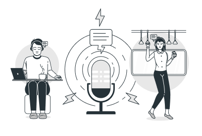

Learn Any Foreign Language
With our teachers who write a program for each student, you will be able to make your first sketch after the first lesson.

Skills
-

Speaking
Improve your English skills and confidence. Live classes and interactive lessons online. 20% extra free for a limited time only Learn English online and improve your skills through our high-quality courses and resources – all designed for adult language learners.
-

Writing
One of the most important and extensive areas of natural science, the science that studies substances, also their composition
-

Reading
Perception and response actions of the user resulting from the use and/or upcoming use of the product, system or service
-

Listening
Here you can find activities to practise your listening skills. Listening will help you to improve your understanding
About Us
The model offers a framework for discussing problems related to the user's experience, as well as possible ways and means of solving them. Application development begins at the top level (strategy), where the future software product is described quite abstractly from the point of view of the expectations of both users and the customer.
-
800
Pupils
-
18
Teachers
-
6
Foreign languages